数据结构复习：从顺序表到单链表——二级指针与链表经典题总结
这篇笔记把我最近的顺序表、单链表练习放在一起。作业保留截图里的思路，解释尽量短；我反复弄混的头指针、二级指针和
free会多写几句。文中的“错误写法”是错题复盘，不代表旁边截图中仍是错误代码。
图中带“根据学习笔记重建”或“题意摘要”的，是我后来依据笔记制作的复习图，不是当时的作业截图。
一、顺序表和单链表先分清
一道链表选择题问链表的特点：A. 插入或删除时无需移动其他元素；B. 数据在内存中一定连续；C. 需要事先估计存储空间；D. 可以随机访问表内元素。选 A。链表节点不要求连续，插删通常改链接；普通单链表按位置查找要从头走，不能按下标直接跳过去。节点也可以按需申请。
我还问过：“顺序表可以随机访问某一个元素吗？”可以。顺序表的元素连续存放，目标地址可以由“首地址 + 下标 × 元素大小”算出，按下标访问是 O(1)。
| 对比 | 顺序表 | 单链表 |
|---|---|---|
| 内存 | 元素连续 | 节点不要求连续 |
| 下标访问 | O(1) |
O(n) |
| 插删 | 可能要移动元素 | 找到位置后通常改指针；找位置可能要 O(n) |
| 空间 | 动态顺序表常有 size/capacity |
节点通常按需申请 |
二、从 malloc 到头指针
malloc 创建的是什么
我写过：
SLTNode* node2 = (SLTNode*)malloc(sizeof(SLTNode));
malloc 返回 void*。在 C 语言里，void* 能自动转换成对象指针，所以强转不是必需的：
SLTNode* node2 = malloc(sizeof *node2);
这里 sizeof *node2 取的是节点大小，不是指针大小。malloc 只申请内存；指针类型告诉编译器怎样解释那块内存。拿到内存后，还要初始化节点成员，并在适当时候 free。
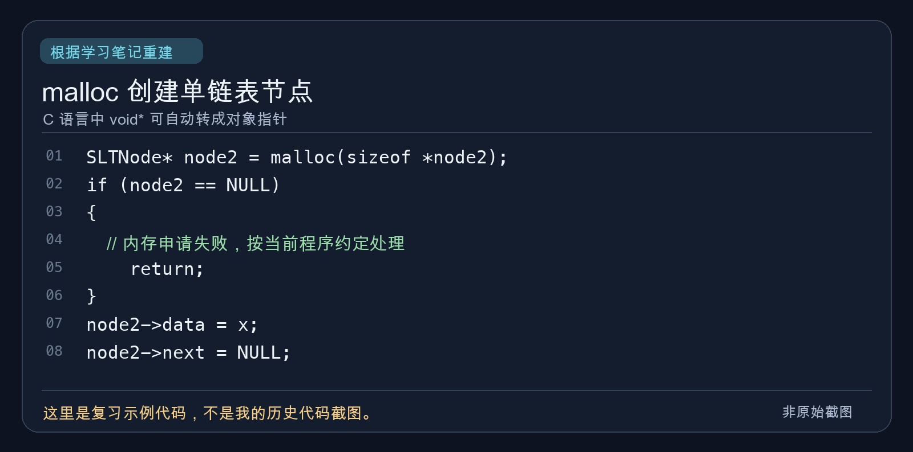
phead 是节点吗
✅ 正确理解：phead 是保存第一个节点地址的指针变量，不是节点本身。下面没有额外的哨兵节点：
phead ──> [ data | next ] ──> [ data | next ] ──> NULL
空链表：phead ──> NULL
所以 phead == NULL 表示一个节点都没有。phead->next 的意思是先按 phead 里的地址找到第一个节点，再读该节点的 next；它等价于 (*phead).next。只有 phead 非空时才能这样访问。
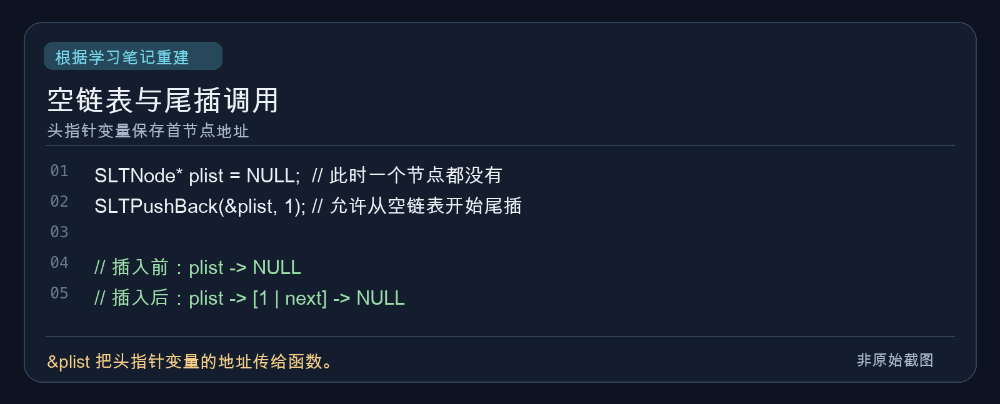
*、& 和二级指针
设 SLTNode* plist 保存首节点地址 0x100，变量 plist 自己放在 0x500：
地址 0x500：plist = 0x100
│
▼
地址 0x100：[ 第一个 SLTNode 节点 ]
plist 是第一个节点的地址；*plist 是第一个节点本身；&plist 是指针变量 plist 自己的地址，也就是例子里的 0x500。记法很直接：& 取变量地址，* 根据地址找到它指向的对象；解引用前要保证地址有效。
再写 SLTNode** pphead = &plist;：
pphead ──> plist ──> 第一个节点
0x500 0x100
pphead 保存头指针变量 plist 的地址；*pphead 就是 plist，值为首节点地址；首节点存在时，**pphead 才是那个节点本身。口头说“第一个节点地址的地址”能帮助记忆，严谨说法是“保存头指针变量自己的地址”。
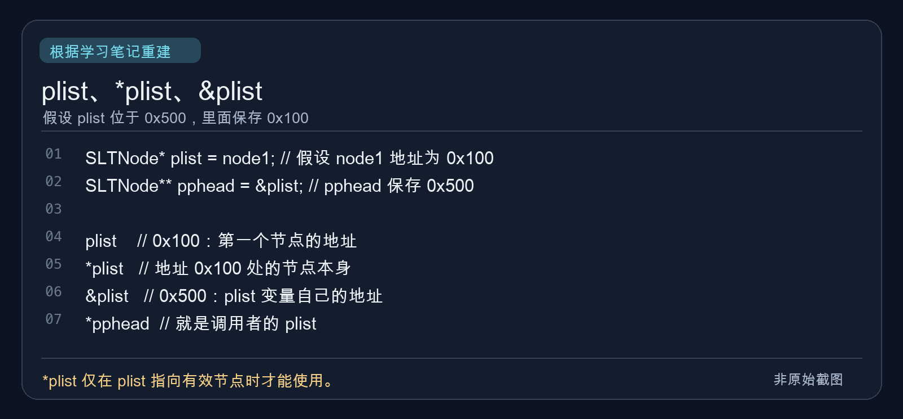
三、二级指针到底解决了什么
为什么 phead = newnode 改不了外面的 plist
void func(SLTNode* phead)
{
phead = newnode; // 示例：newnode 已指向一个新节点
}
SLTNode* plist = NULL;
func(plist);
C 的实参是按值传递。调用时，phead 只拿到 plist 里地址值的一份副本；给 phead 重新赋值，变的是这个局部变量。函数结束后，外面的 plist 仍为 NULL。
调用前：plist = NULL，phead = NULL
赋值后：plist = NULL，phead = newnode
如果传 &plist，形参用 SLTNode** pphead，情况就不同：
void func(SLTNode** pphead)
{
*pphead = newnode; // 示例：newnode 已指向一个新节点
}
SLTNode* plist = NULL;
func(&plist);
此时 *pphead 正是调用者的 plist，所以 *pphead = newnode 真正改了外面的头指针。复习时把两句并排看：
| 写法 | 实际改了谁 |
|---|---|
phead = newnode; |
函数内部的指针副本 |
*pphead = newnode; |
调用者的指针变量 |
我以前说“修改指针本身的地址”，这个说法不准。若 pos 变量位于 0x500，原来保存 0x100，执行 pos = newnode; 且 newnode 保存 0x300，变化的是 pos 中保存的地址值 0x100 → 0x300；pos 变量本身仍在 0x500。
next 也是指针，为什么 SLTInsertAfter 只传一级指针
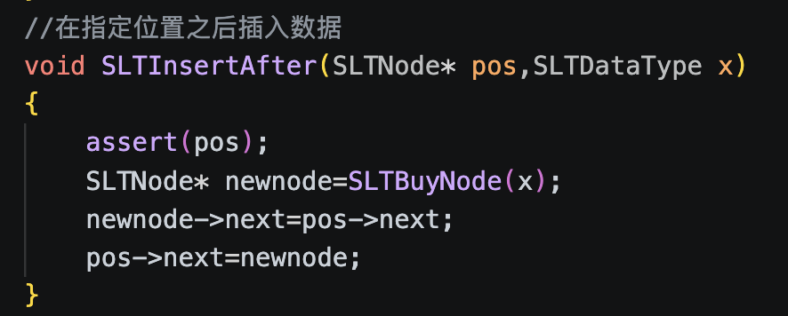
void SLTInsertAfter(SLTNode* pos, SLTDataType x)
{
assert(pos);
SLTNode* newnode = SLTBuyNode(x);
newnode->next = pos->next;
pos->next = newnode;
}
❓ 我的疑问：next 本身也是指针，为什么不用二级指针？因为 pos = newnode 和 pos->next = newnode 改的是不同地方。前者改局部 pos 的值；后者等价于 (*pos).next = newnode，改的是 pos 所指真实节点里的成员。外面的指针也指向同一个节点，自然能看到链表变化。
先接 newnode->next = pos->next，再改 pos->next，原后继才不会丢。函数里的指针是局部变量，不等于它指向的内存也是局部的。
尾插、尾删的 assert 为什么不同
// 尾插：允许空链表插入第一个节点
assert(pphead);
// 尾删：原链表必须至少有一个节点
assert(pphead && *pphead);
尾插允许 *pphead == NULL；尾删不允许。&& 从左往右短路求值：若 pphead 为 NULL，就不会继续计算 *pphead，避免空指针解引用。
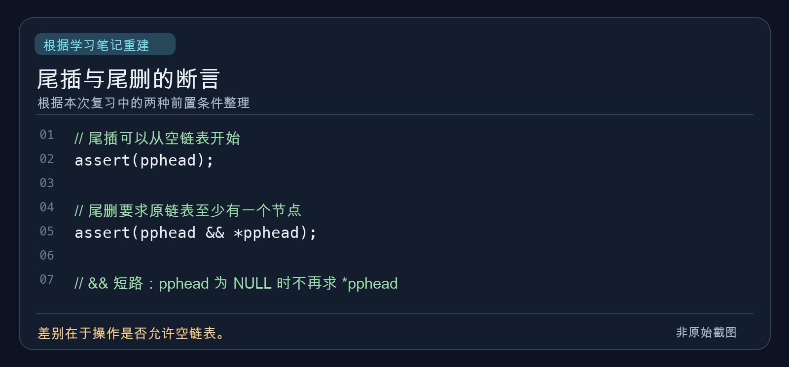
删除 pos 时，为什么 pos 不用二级指针
我练习过的逻辑是：
void SLTErase(SLTNode** pphead, SLTNode* pos)
{
assert(pphead && *pphead && pos);
SLTNode* prev = *pphead;
if (pos == *pphead)
{
SLTPopFront(pphead);
}
else
{
while (prev->next != pos)
{
prev = prev->next;
}
prev->next = pos->next;
free(pos);
pos = NULL;
}
}
中间节点真正的“摘链”发生在 prev->next = pos->next，它修改前驱节点的成员；free(pos) 只需要待释放内存的地址，一级指针足够。这里的 pos = NULL 只清空函数内的副本，调用者若还保存该节点地址，那个指针仍会悬空。此写法还要求 pos 确实属于该链表；否则 while 走到末尾会解引用空指针。
头节点是另一回事：plist → [10] → [20] → [30] 头删后，要让外面的 plist 改指向 [20]。因此需要类似 *pphead = (*pphead)->next; 的赋值。需要二级指针的原因是要修改调用者的头指针，不是 free 要求二级指针。删除中间的 [20] 时，prev->next = pos->next; free(pos); 就够了，plist 仍指向 [10]。
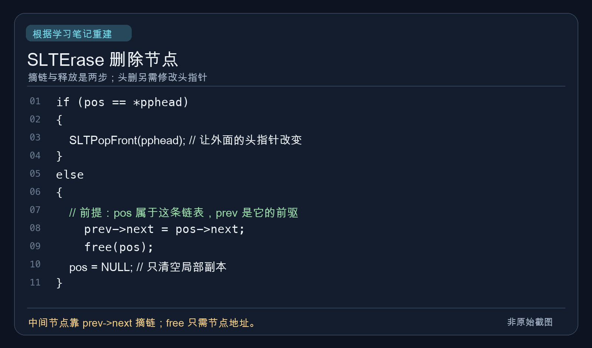
free(pos); pos = NULL; 会清空外面的指针吗
不会。free(pos) 能释放那个地址对应的动态内存；pos = NULL 改的只是函数里的副本。调用者的指针仍保存旧地址，成为悬空指针。若函数的目标还包括清空调用者的指针，可以传它的地址：
void releaseNode(SLTNode** pp)
{
free(*pp);
*pp = NULL;
}
// 调用：releaseNode(&p);
销毁整条链表能不能只传一级指针
可以释放所有节点，包括第一个节点：
void SLTDestroy(SLTNode* phead)
{
while (phead)
{
SLTNode* next = phead->next;
free(phead);
phead = next;
}
}
但外面的 plist 没变成 NULL，而是悬空。不是“其他节点删了，头节点没删”，而是“所有节点都释放了，调用者的头指针没清空”。所以我更想用下面这一版：
void SLTDestroy(SLTNode** pphead)
{
SLTNode* cur = *pphead;
while (cur)
{
SLTNode* next = cur->next;
free(cur);
cur = next;
}
*pphead = NULL;
}
这里约定 pphead 是有效地址。头节点是第一个真实的 SLTNode；头指针是 SLTNode* plist 这样的变量。头节点可以已被释放，而头指针仍保存旧地址，这就是悬空指针。
四、我的链表作业
LeetCode 206：反转链表
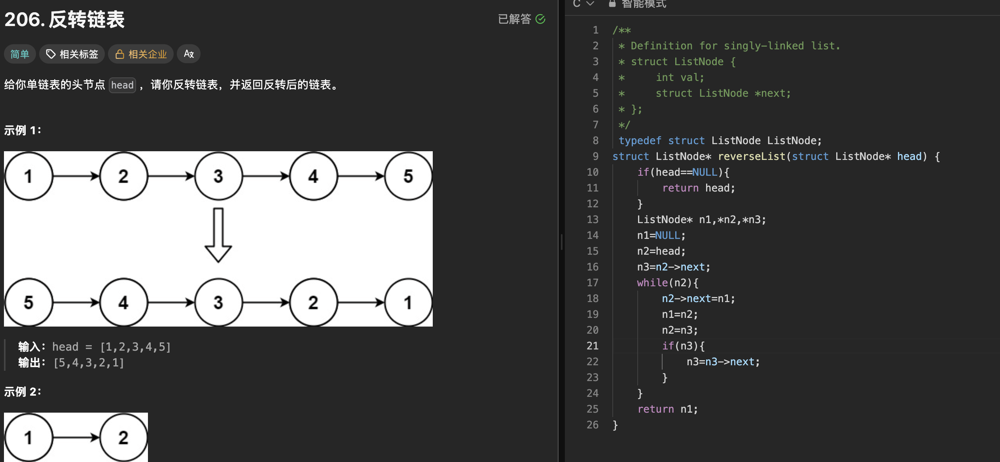
截图里我用三个指针，空链表先返回：
struct ListNode* reverseList(struct ListNode* head)
{
if (head == NULL)
{
return head;
}
ListNode* n1, *n2, *n3;
n1 = NULL;
n2 = head;
n3 = n2->next;
while (n2)
{
n2->next = n1;
n1 = n2;
n2 = n3;
if (n3)
{
n3 = n3->next;
}
}
return n1;
}
n1 是已反转部分的头，n2 是当前节点，n3 提前保存后继：
已反转 <- n1 n2 -> n3 -> 后续
改 next 前先记住 n3
如果先改 n2->next 而没保存后继，剩余链表可能找不回来。时间 O(n)，额外空间 O(1)。
LeetCode 203：移除链表元素
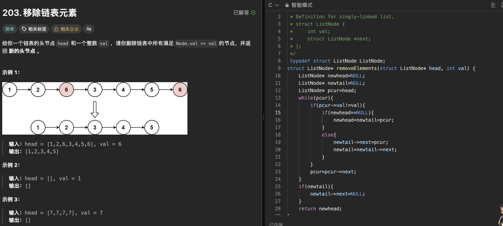
我把不等于 val 的原节点接成一条新链，最后把尾节点的 next 置空：
struct ListNode* removeElements(struct ListNode* head, int val)
{
ListNode* newhead = NULL;
ListNode* newtail = NULL;
ListNode* pcur = head;
while (pcur)
{
if (pcur->val != val)
{
if (newhead == NULL)
{
newhead = newtail = pcur;
}
else
{
newtail->next = pcur;
newtail = newtail->next;
}
}
pcur = pcur->next;
}
if (newtail)
{
newtail->next = NULL;
}
return newhead;
}
⚠️ 改进点：如果链表节点由自己 malloc 并负责回收，被跳过的节点在这份代码里没有 free，会泄漏；newtail->next = NULL 只负责断开结果链，不负责释放它们。这里保留我的拼接思路。
LeetCode 876：链表的中间结点
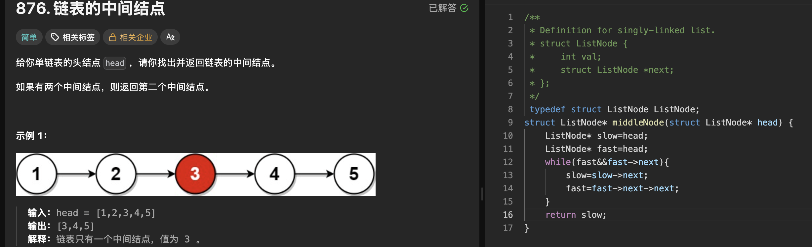
struct ListNode* middleNode(struct ListNode* head)
{
ListNode* slow = head;
ListNode* fast = head;
while (fast && fast->next)
{
slow = slow->next;
fast = fast->next->next;
}
return slow;
}
slow 一次一步，fast 一次两步；偶数个节点时，slow 落在第二个中间节点。时间 O(n)，额外空间 O(1)。
环形链表：约瑟夫问题
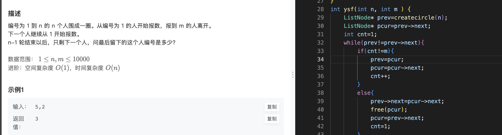
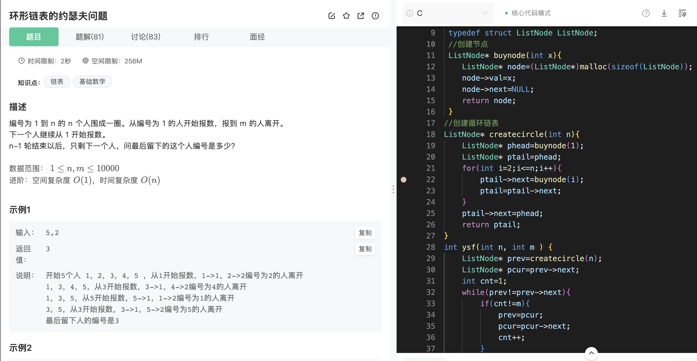
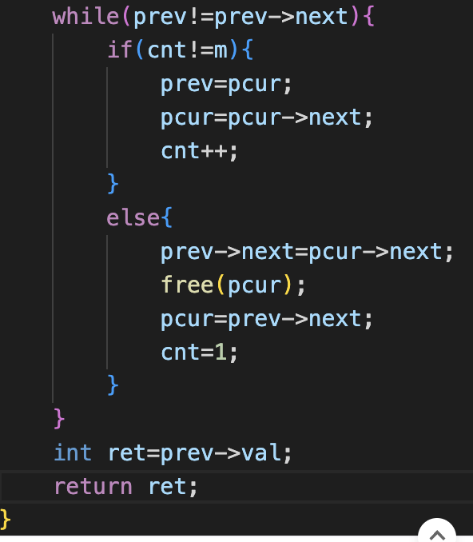
创建链表时，我让尾节点连回头节点，并返回尾节点：
ListNode* buynode(int x)
{
ListNode* node = (ListNode*)malloc(sizeof(ListNode));
node->val = x;
node->next = NULL;
return node;
}
ListNode* createcircle(int n)
{
ListNode* phead = buynode(1);
ListNode* ptail = phead;
for (int i = 2; i <= n; i++)
{
ptail->next = buynode(i);
ptail = ptail->next;
}
ptail->next = phead;
return ptail;
}
因此 prev = createcircle(n) 是尾节点，pcur = prev->next 是头节点。循环中一直保持 prev->next == pcur：
int ysf(int n, int m)
{
ListNode* prev = createcircle(n);
ListNode* pcur = prev->next;
int cnt = 1;
while (prev != prev->next)
{
if (cnt != m)
{
prev = pcur;
pcur = pcur->next;
cnt++;
}
else
{
prev->next = pcur->next;
free(pcur);
pcur = prev->next;
cnt = 1;
}
}
int ret = prev->val;
return ret;
}
❓ 我问过循环条件能否写 pcur != pcur->next。在这份代码维持上述不变量时可以：只剩一个节点时 prev == pcur，两个节点的 next 都指回自身。保留 prev != prev->next 更贴合“前驱看是否只剩自己”的写法。
⚠️ 截图代码取得最后编号后没有 free(prev)，自己管理节点内存时应记得释放最后一个节点。另外，截图题目的进阶要求是时间 O(n)、空间 O(1)；这份创建环形链表的写法需要 O(n) 节点空间，逐个报数的时间最坏是 O(nm)，不满足进阶要求。这里仍保留我实际写的链表解法。
LeetCode 21：合并两个有序链表
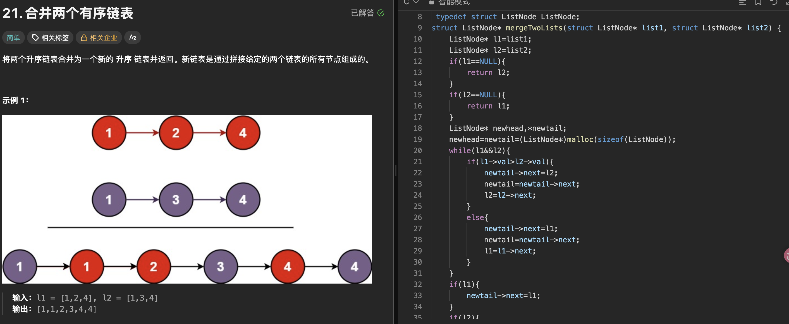
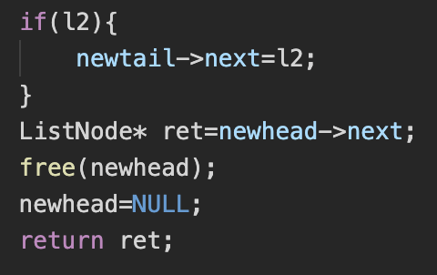
我用了额外的虚拟头节点 newhead，newtail 一直指向结果链表尾部：
struct ListNode* mergeTwoLists(struct ListNode* list1, struct ListNode* list2)
{
ListNode* l1 = list1;
ListNode* l2 = list2;
if (l1 == NULL) return l2;
if (l2 == NULL) return l1;
ListNode* newhead, *newtail;
newhead = newtail = (ListNode*)malloc(sizeof(ListNode));
while (l1 && l2)
{
if (l1->val > l2->val)
{
newtail->next = l2;
newtail = newtail->next;
l2 = l2->next;
}
else
{
newtail->next = l1;
newtail = newtail->next;
l1 = l1->next;
}
}
if (l1) newtail->next = l1;
if (l2) newtail->next = l2;
ListNode* ret = newhead->next;
free(newhead);
newhead = NULL;
return ret;
}
虚拟头节点省去“第一次接入”的特殊分支。真正结果的头是 newhead->next，所以先存进 ret，再释放额外申请的 dummy；后面接入的是原链表节点，不需要逐个新建。dummy 也能定义成栈变量，不一定要 malloc。这份练习代码默认申请成功；实际自己管理内存时还要检查 malloc 返回值。时间 O(m+n)，额外空间 O(1)。
五、数组题的两处语法错
LeetCode 88：合并两个有序数组
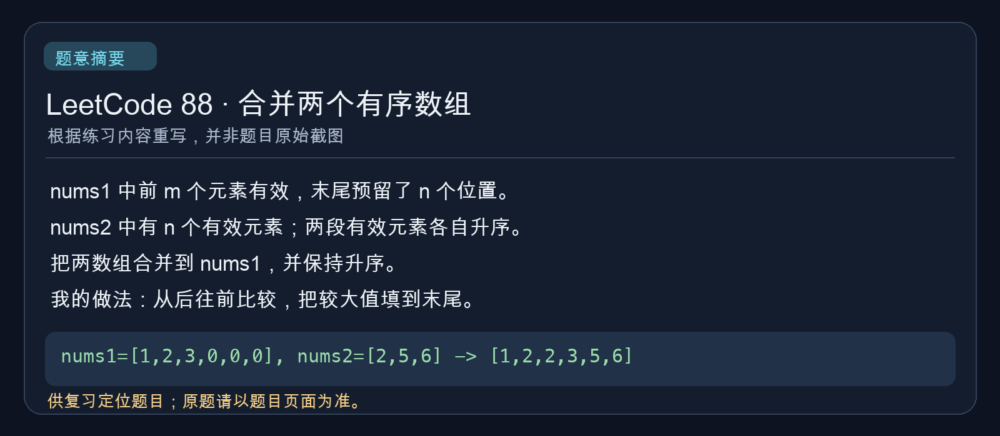
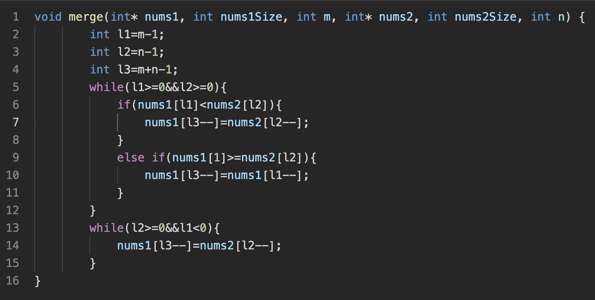
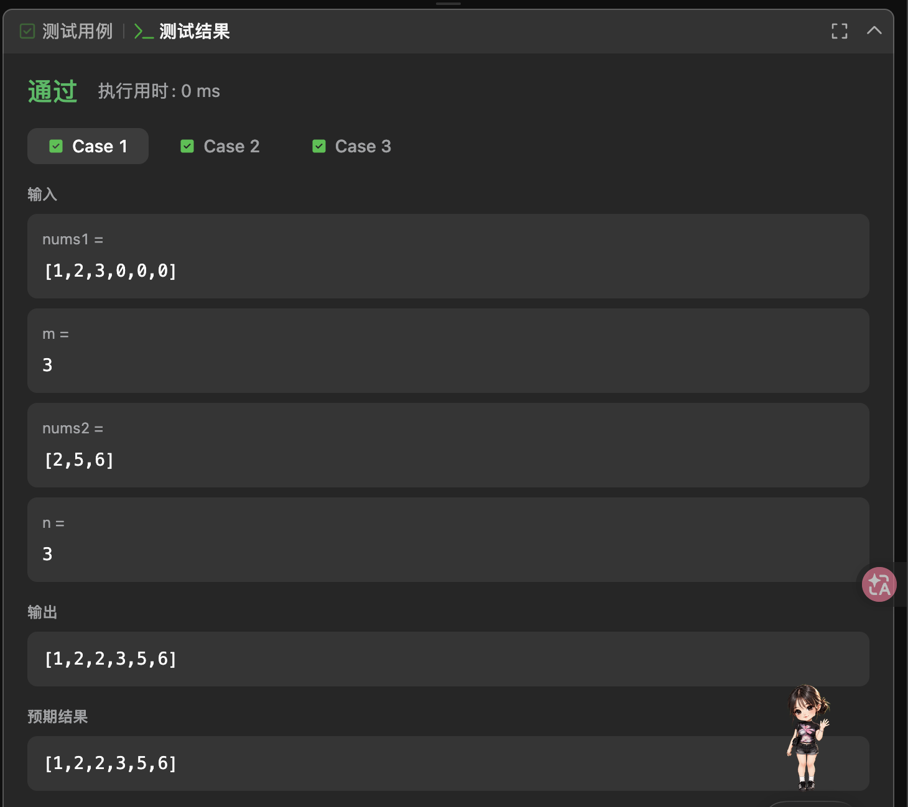
整体思路是从后往前比较：l1 = m - 1、l2 = n - 1、l3 = m + n - 1，较大元素填入 nums1 的末尾。我的历史错误写法是：
// 错误写法：减的是 nums2[l2] 这个元素的值
nums1[l3--] = nums2[l2]--;
// 正确写法：用当前元素后，让下标 l2 减 1
nums1[l3--] = nums2[l2--];
截图里已经是正确的 l2--，不能把历史错误当成截图原码。nums2[l2]-- 的 -- 作用于数组元素；nums2[l2--] 的 -- 作用于下标变量。以后看到后置 --，先看它紧跟着的是哪个表达式。
按这次复习整理的正确写法：
void merge(int* nums1, int nums1Size, int m,
int* nums2, int nums2Size, int n)
{
int l1 = m - 1;
int l2 = n - 1;
int l3 = m + n - 1;
while (l1 >= 0 && l2 >= 0)
{
if (nums1[l1] < nums2[l2])
nums1[l3--] = nums2[l2--];
else
nums1[l3--] = nums1[l1--];
}
while (l2 >= 0)
nums1[l3--] = nums2[l2--];
}
LeetCode 27：移除元素
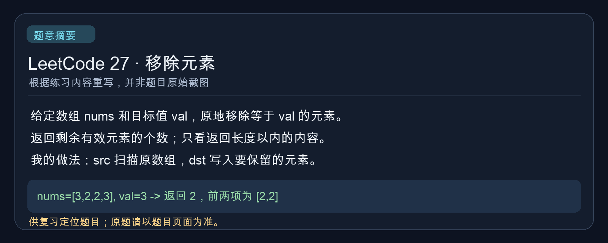
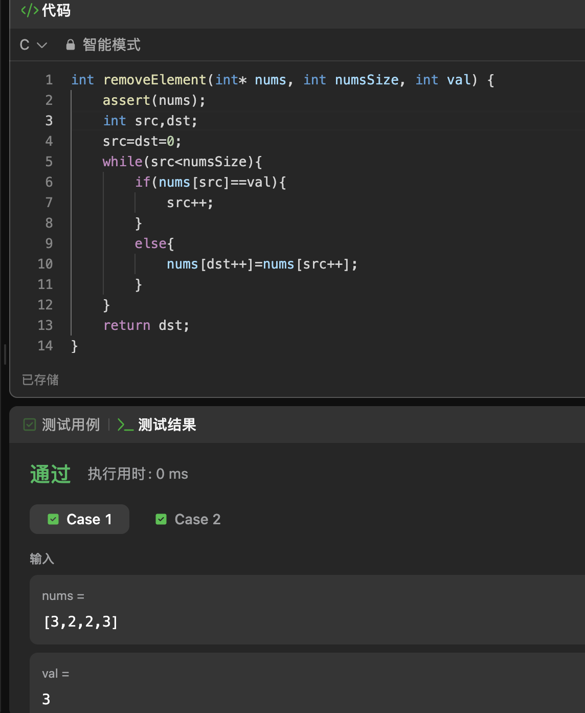
我用 src 扫描原数组，用 dst 记录下一个有效元素该放的位置。历史上写错的条件是：
// 错误写法：先计算 src == val，结果只会是 0 或 1
if (nums[src == val])
// 正确写法：比较当前元素的值与 val
if (nums[src] == val)
所以错误写法实际只会访问 nums[0] 或 nums[1]。截图中的条件已经写对。复习版完整代码：
int removeElement(int* nums, int numsSize, int val)
{
int src = 0;
int dst = 0;
while (src < numsSize)
{
if (nums[src] == val)
src++;
else
nums[dst++] = nums[src++];
}
return dst;
}
六、我的高频疑问 FAQ
| 疑问 | 现在的回答 |
|---|---|
phead 是头节点吗？ |
不是，是保存首节点地址的头指针变量。 |
pphead 是什么？ |
保存头指针变量地址的二级指针。 |
为什么 phead = newnode 改不了外面的 plist？ |
phead 只是地址值副本。 |
为什么 *pphead = newnode 可以？ |
*pphead 指向调用者真正的 plist。 |
pos->next 也是指针，为什么一级指针够？ |
改的是真实节点的 next 成员。 |
free(pos) 为什么不用二级指针？ |
free 只需要待释放内存的地址。 |
| 什么时候需要二级指针？ | 要在函数里改变调用者的指针变量，且不通过返回值交回新值时。 |
| 为什么头删常用二级指针？ | 要让外面的头指针改指向第二个节点。 |
| 销毁链表能用一级指针吗？ | 能释放全部节点，但不会自动清空外面的头指针。 |
七、考前速记
phead保存第一个节点的地址；它不是节点本身。*phead是第一个节点本身，前提是phead有效。&phead是指针变量phead自己的地址。pphead通常保存头指针变量的地址。*pphead就是调用者的头指针变量。phead = xxx只改函数内部的指针副本。*pphead = xxx能改调用者的头指针。pos->next = xxx改真实节点的成员，一级指针够。- 局部指针不代表它指向的内存也是局部的。
free(pos)不需要二级指针。free(pos); pos = NULL;不会清空调用者的指针。- 头插、头删都要特别留意头指针变化。
- 删除中间节点通常改
prev->next。 - 一级指针能销毁所有节点，但外面的头指针会悬空。
- 空链表就是头指针为
NULL。 - 顺序表下标访问
O(1)；单链表按位置访问通常O(n)。 nums[l2]--减的是元素，nums[l2--]减的是下标。nums[src == val]先比较，再拿0/1当下标。- 改节点的
next前，先想好是否要保存后继地址。